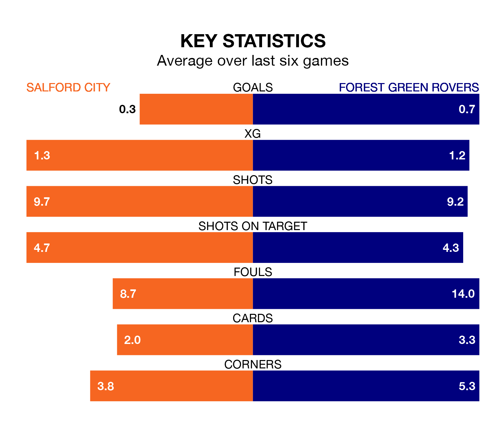

Saturday's match at the Peninsula Stadium sees two relegation candidates play each other, as 21st-ranked Salford City host bottom of the table Forest Green Rovers.
Salford have picked up 23 points from their first 23 EFL League Two games, with six wins and five draws.
That is six points more than the Green have collected, having won four and drawn five.
Salford are in terrible form in EFL League Two, with no wins and two draws from their last six games.
And also with no wins and two draws over that period, Forest Green's form is identical – they have both taken two points from 18.
In Matt Smith, City have one of the league's most on-form strikers so far this season. He has notched 14 goals in 25 appearances, to sit fourth in the scoring charts.
His goal rate of one every 142 minutes is slightly quicker than that of Mathew Stevens, Rovers' top scorer with a goal every 142 minutes, and a total of seven goals in 19 games.
With 24 goals in 24 games so far this season, the Green are the league's second-lowest scorers with 1.0 goals per game. And they are conceding more than average, letting in 44 goals at a rate of 1.8 per game.
The Ammies are also below average scorers, with 1.3 goals per game, compared to a league average of 1.5. They have conceded 1.8 goals per game.
In the last three years, Salford and Forest Green have played each other on four occasions. Salford won two of them, Forest Green one, and they drew once.
On average, the Ammies scored 1.5 goals and the Green 1.0 in those matches.
Their last meeting was on August 5, when Salford won 2-0 away.
Salford's last match was on Monday, a 3-0 loss against Accrington Stanley.
Forest Green drew 1-1 with AFC Wimbledon last time out, also on Monday, with Stevens on the scoresheet.
Updated: 12:57, 02/01/24